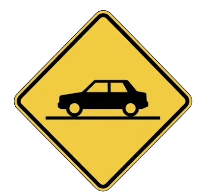
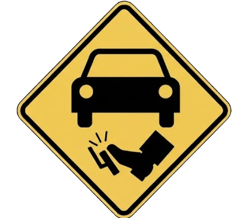

The Co-Pilot In Your Pocket
Real-time vision. Traffic analysis. Behavioral prediction.
Because anything can happen on the road and you might need a witness.
3 Layers of Protection
L1Detection
Each frame, YOLO11n answers one question: what is visible and where. Boxes, classes and confidences, ten times per second, entirely on the phone.
L2Tracking
Detections gain identity across frames by box overlap. Once a box becomes track #7, change becomes measurable: growth rate, sideways slide, lane zone, 900 ms of motion history. A detected car becomes a measured, moving object.
L3Decision
Pure arithmetic on tracker state plus telemetry. TTC gates, crossing-time prediction, consecutive-frame confirmation, per-track cooldowns. No machine learning at this layer: every threshold is a plain number that can be read, audited and tuned.
Tuned for roads that follow no textbook
The model is adapted to where it actually drives: hard examples from Tunisian traffic are annotated and fed back into training, and every alert threshold was recalibrated from logged field drives.
Predicts cut-offs before they happen
Most dangerous moments in city traffic start beside you, not ahead of you: the cut-off, the intersection lunge, the sudden swerve. Here is how the app sees it coming. It follows every car around you frame by frame and measures its sideways speed. When a car starts sliding toward your lane, it calculates how many seconds that car needs to cross into your path. If that number gets short, the alert fires while the car is still beside you, not after it is already in front of you. The rule was written from real close calls and tuned on logged field drives.

You can finally visualise your stopping distances
Green, road clear
After a one-time calibration, the app projects the car's current stopping distance onto the road as a translucent zone. It grows with speed and shows its reach in meters, so a number every driver underestimates stays permanently in view.
Amber, lead inside the zone
The moment the vehicle ahead stands inside your projected stopping distance, the carpet turns amber. Nothing beeps yet. You simply see that the margin is gone.
Red, time is short
Inside the zone with a short time-to-contact, the carpet turns red, and if brake lights flare ahead, the six-beep rear-end advisory fires with a double screen flash. The check runs independently of every other alert so it can never be crowded out.

All your clips are safely recorded locally
Recording writes in 5-minute self-contained chunks from the first second of every session. A crash, a dead battery, or the system killing the app costs at most five minutes of footage, never the whole trip. When storage hits the cap, the oldest segment quietly makes room for the newest. Everything stays on your phone, in your own gallery.
Event clips, cut for you
Qualifying events are extracted automatically as 15-second files, five seconds before the moment to ten after, named for what happened and listed in amber. The moments that matter never drown in hours of footage.
Screen or camera
Tap REC for a clean camera recording that storage management never deletes. Long-press for interface capture with the full HUD, detections and alerts burned in.
DIM mode
One tap blacks the screen while detection, alerts and recording keep running. Speed stays visible in white; a serious alert flashes the whole screen red five times with sound. Heat drops, battery lasts, night glare disappears.
Detection, tracking, decision, alerts, recording and the driving profile run with the network switched off: on-device inference means the co-pilot works in a tunnel, in the desert, in airplane mode. Maps and navigation run on OpenStreetMap with offline tile caching and no Google dependency. There is no account and no telemetry, and your footage lives in your own gallery.
You don't need a Tesla to benefit from driver assistance.
Dense-traffic driving produces two accidents above all others: the cut-off and the rear-end. The crossing and brake advisories exist for exactly those.
The driving profile and the 7-day close-call count show how the car is really being driven, without lecturing anyone.
Recording with intelligence: the moments that matter are extracted automatically as named 15-second clips instead of being buried in hours of footage.
DIM mode keeps the co-pilot working behind a black screen, and the chunked recording architecture was made to survive long trips.
Profiles and event data per vehicle at phone cost per unit. On the roadmap after the consumer app proves itself, together with OBD engine data.
Alerts, navigation, recording, coaching. One screen.
ALive Advisories
Distinct sounds first, banner second, so your eyes can stay on the road. Each alert carries its measured values: time-to-contact, risk, crossing time. Alerts are deliberately rare, so when one fires you know it matters.
BSpeed Signs and Navigation
Circular speed-limit signs are read on the fly and shown as the familiar red-ring badge, blinking past the limit. Search, route and automatic rerouting run on OpenStreetMap with cached tiles. There is no voice turn-by-turn on purpose: ADAS watches the road and leaves spoken directions to your maps app.
CClips, Already Cut
The Clips tab holds anything worth rewatching, trimmed to 15 seconds and named for the event. Each clip carries an INFO sheet with every logged value and a plain verdict.
DYour Driving Profile
Every drive updates four dimensions: smoothness, anticipation, discipline and calm, plus an overall score, a named state, an ECO estimate and the close-call count. Anticipation weighs heaviest, as the dimension most predictive of trouble.
Every alert is based on measured motion, and rare enough to stay trusted.
Calibrated on real Tunis traffic and recalibrated from a logged field audit. Per-track cooldowns keep any alert from repeating itself into noise, and a sensitivity setting lets you scale the margins to your own driving.
A vehicle in your lane approached too fast. Fires on an honest time-to-contact gate with two confirming passes, tone plus banner with TTC and risk.
A car cutting across your path, predicted from its sideways motion before it arrives. Four fast urgent tones and a side arrow.
Brake lights ahead while the car stands inside your projected stopping zone. Six short beeps and a double red screen flash.
A person stepping toward the road, caught before entering the lane. Double high tone.
A vehicle slides from the neighbor lane into yours while close. Tone and banner.
A red light ahead while the car is not decelerating. Double error tone.
A bicycle close by, with its own distinct tone, because two-wheelers deserve their own margin.
Logged quietly rather than beeped: the badge blinks past the limit, and the rest goes to the post-drive debrief.
Straight answers, including the limits.
Join the Closed BetaHeat was treated as a core design constraint. The app reduces its own load early and tells you when it does; recording pauses only at severe temperatures, and DIM mode cuts the biggest heat source, the screen itself. Pointing the air conditioning toward the windshield handles the rest. In extreme ambient heat the app slows down gracefully and says so on screen.
The co-pilot itself, never: detection, alerts, recording and the profile run entirely on the phone, even in airplane mode. Maps use OpenStreetMap with offline tile caching, and route search runs on free services with no account attached to you.
No. Every frame is analyzed on the phone and discarded. No account, no cloud, no telemetry. Recordings live in your own gallery, and drive data never leaves the device.
The alert set was calibrated on logged field data specifically to be rare and meaningful, and every alert can be reviewed afterward in the debrief with the exact values it measured. Alerts can still be late or absent: low light, heavy rain, glare and extreme heat degrade perception, and the screen tells you when that happens.
Running computer vision does consume power. A full battery lasts roughly four hours under load; a charger is recommended for long trips, and the app warns before starting a recording on battery.
Never. ADAS only advises: it holds no certification, it cannot brake or steer, and it guarantees nothing. If your car already has certified assistance, keep using it. This app exists for the millions of cars that will never get it.
Drive With a Second Pair of Eyes
The closed beta is forming now: daily drivers wanted for the Google Play track. Install, mount, calibrate once, drive. Your feedback ships in days, not quarters.